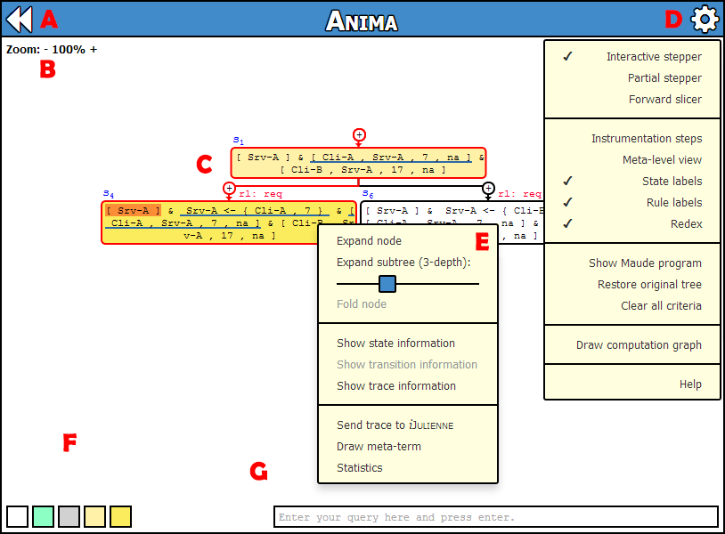

Restarts the tool to enter a new program and initial state.
Allows the user to zoom in and out the computation tree by clicking the plus and minus symbols or by
pressing the corresponding keys of the numeric keyboard. Also, by clicking in the displayed zoom level value, it resets
to the default value of 100%. Moreover, the computation tree can be easily repositioned by dragging it with the mouse or
by pressing the direction arrows of the keyboard. Finally, each time the window is resized or a node is selected, the
computation tree is automatically centered with respect to the currently selected node.
Shows an interactive computation tree that allows the user to analyze the behaviour of the input program starting from the given input state.
The tree can be inspected by expanding its states according to one of the different exploration modalities described in section D.
The supported interactions with the computation tree can be summarized as follows:
- Select any part of the state to highlight the relevant subterms that will be consider as the slicing criterion. There is no need to select the whole subterms; the tool automatically detects and highlights a subterm if at least one of the subterm is selected.
The procedure to remove the highlighting of a subterm is as simple as just left-clicking on it.
-
- Right-click in a node to access the features described in the E section of this help.
-
- Left-click in a state label to expand the selected node, which will compute all the possible single rewriting steps that can be performed starting from the state under the fixed exploring modality.
-
- Left-click in a rule label to access the detailed information of the transition from the previous state to the current state. This information includes the rule or equation applied, the computed substitution and the position of the redex being reduced.
-
- Left-click in any part of the node to select it. To facilitate the inspection, whenever a node is selected, the tree view automatically focuses on the node, although the user can easily move it to the desired position by manually dragging it.
-
- Left-click in the and symbols to show/hide the instrumentation steps between two normalized states.
- Interactive stepper / Partial stepper / Forward slicer
- Selects the desired inspection strategy, which gets fixed once the B-normalized root of the tree is first expanded and lasts
until it is folded, resetting the entire computation tree. The criteria for the partial stepper and forward slicer
strategies can be specified by highlighting with the mouse the state symbols of interest directly on the tree (or by executing
a query) and then expanding the node.
Instrumentation steps- Displays either the default, simplified view of a Maude step, or the complete and detailed
sequence of steps in the corresponding instrumented trace that simulates the Maude step. This
facility can be locally accessed by clicking in the plus and minus symbols that respectively
adorn the standard/instrumented view of the Maude step, or by checking/unchecking this option
for the entire computation tree.
Meta-level view- Shows the transition and state information in meta-level representation.
State labels- Shows or hides the unique identifier of each state.
Rule labels- Shows or hides the labels of the applied rules or equations at each transition.
Redex- Underlines the discrepancies between the two states (typically the selected redex of the original term and its contractum in the derived term).
In the case of a non-instrumented step we cannot, in general, highlight the redex and contractum of the step as they
could be spreaded into pieces in the displayed terms because of the matching modulo B that precedes the rewrite step, and the
normalization that occurs after the rewrite step. Actually, note that both terms are eventually reordered,
augmented with identity elements, and parenthesised, yielding the B-equivalent terms that star in an intermediate
rewrite step. In this case, we underline the antecedents in the original term of the reduced redex
from its B-equivalent form (and the descendants in the derived, B-normalized term of the corresponding contractum).
Show Maude program- Shows the provided Maude program.
Restore original tree- Restores the computation tree to its initial state.
Clear all criteria- Clears the selected criteria for all the states.
Draw computation graph- Shows an interactive graph representation of the computation tree.
Draw Ω-graph (only available in the Partial stepper exploration modality)- Shows an interactive graph representation of the partial computation tree.
Draw sliced graph (only available in the Forward slicing exploration modality)- Shows an interactive graph representation of the sliced computation tree.
Help- Shows this window.
- Expand node / Fold node
- Expands the node using the selected strategy and criterion (if applicable) or folds it, deleting all the previously
computed expansion information.
Expand subtree / Fold node- Expands the subtree whose root is the selected node by using a breadth-first strategy and up to the selected depth, which is adjustable from the slider control.
Show state information- Displays the concrete and abstract information of the selected state in a fresh window to facilitate its inspection.
Show transition information- Shows additional transition information like the rule/equation applied and the computed substitution.
This information can be also accessed by clicking on the corresponding edge label that identifies the rule or equation
applied.
Show trace information- Shows the complete information of the execution trace leading from the root to the selected node.
This information is presented in a table that includes the labels of the rules and equations applied,
the terms that result from the application of each rule or equation and the computed trace slice
(if applicable). Moreover, Anima offers the possibility to export the displayed trace into meta-level
representation, so the user can easily transfer the selected trace to any other Maude trace analyzer
tool like, for example, iJulienne.
Send trace to iJulienne- Exports the trace leading from the initial to the selected state to the iJulienne
online trace analyzer tool, which supports both incremental forward and backward slicing of a given Maude computation trace.
Draw meta-term- Draws the meta-representation of the selected state in a tree-form together with the position of each subterm in order to facilitate its inspection.
Statistics- Shows detailed statistics of the current computation tree for the selected node in the tree. This shows,
among others, the number of terms (normalized or not) that are reachable from this node, its number of children
and depth in the tree, and the global size of the computation tree.
- Default nodes background color
- Click to choose the background color of the default nodes in the displayed computation tree.
Instrumentation nodes background color- Click to choose the background color of the instrumentation nodes in the displayed computation tree.
Redundant nodes background color- Click to choose the background color of the redundant nodes in the displayed computation tree (i.e., those states that can be ignored in the computed trace slice).
Parent nodes background color- Click to choose the background color of the parent nodes (except for the instrumented ones) of the currently selected node in the displayed computation tree.
Selected node background color- Click to choose the background color of the currently selected node in the displayed computation tree.
Allows the information of interest to be searched on huge states of complex computation trees. The user only
has to provide a filtering pattern (the query) that specifies the set of symbols that he/she wants to search for and press enter.
After that, all the states matching the query are automatically highlighted in the computation tree. Use symbols ? and _ as wildcards
to respectively identify and discard information.